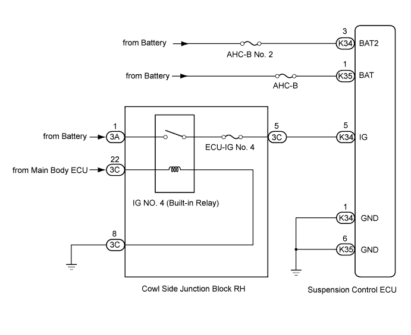
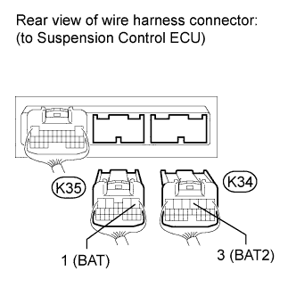

DTC C1782 Power Source Voltage Malfunction |
| DTC Code | Detection Condition | Trouble Area |
| C1782 | While the engine switch is on (IG), voltage at terminal IG, BAT and/or BAT2 is 10 V or less, or 16 V or more for 0.5 seconds. |
|

| 1.READ VALUE USING INTELLIGENT TESTER (IG VOLTAGE) |
Connect the intelligent tester to the DLC3.
Turn the engine switch on (IG) and the tester on.
Read the "IG Power Source Voltage" item in the Data List.
| Tester Display | Measurement Item/Range | Normal Condition | Diagnostic Note |
| IG Power Source Voltage | Power supply voltage / min.: 0 V max.: 255 V | Engine switch on (IG): 11 to 14 V | - |
|
| ||||
| OK | |
| 2.RECONFIRM DTC OUTPUT |
Clear the DTCs (Click here).
Check for DTCs.
| Result | Proceed to |
| DTC is output | A |
| DTC is not output | B |
|
| ||||
| A | |
| 3.READ VALUE USING INTELLIGENT TESTER (+B POWER SOURCE VOLTAGE, +B2 POWER SOURCE VOLTAGE) |
Connect the intelligent tester to the DLC3.
Turn the engine switch on (IG) and the tester on.
Read the "+B Power Source Voltage" and "+B2 Power Source Voltage" items in the Data List.
| Tester Display | Measurement Item/Range | Normal Condition | Diagnostic Note |
| +B Power Source Voltage | Power supply for absorber control actuator / min.: 0 V max.: 255 V | Engine switch on (IG): 11 to 14 V | - |
| +B2 Power Source Voltage | Power supply for No. 1 height control valve and front suspension control valve / min.: 0 V max.: 255 V | Engine switch on (IG): 11 to 14 V | - |
|
| ||||
| OK | ||
| ||
| 4.INSPECT FUSE (AHC-B, AHC-B NO. 2) |
Remove the AHC-B and AHC-B No. 2 fuses from the cowl side junction block RH.
Measure the resistance according to the value(s) in the table below.
| Tester Connection | Condition | Specified Condition |
| AHC-B fuse | Always | Below 1 Ω |
| AHC-B No. 2 fuse | Always | Below 1 Ω |
|
| ||||
| OK | |
| 5.CHECK HARNESS AND CONNECTOR (BATTERY - SUSPENSION CONTROL ECU) |
Disconnect the K34 and K35 ECU connectors.
 |
Measure the voltage according to the value(s) in the table below.
| Tester Connection | Switch Condition | Specified Condition |
| K34-3 (BAT2) - Body ground | Engine switch on (IG) | 11 to 14 V |
| K35-1 (BAT) - Body ground | Engine switch on (IG) | 11 to 14 V |
|
| ||||
| OK | ||
| ||
| 6.CHECK HARNESS AND CONNECTOR (BATTERY - ECU AND BODY GROUND) |
 |
Disconnect the K34 ECU connector.
Measure the voltage according to the value(s) in the table below.
| Tester Connection | Switch Condition | Specified Condition |
| K34-5 (IG) - Body ground | Engine switch on (IG) | 11 to 14 V |
| Result | Proceed to |
| OK | A |
| NG (2UZ-FE) | B |
| NG (1VD-FTV) | C |
|
| ||||
|
| ||||
| A | ||
| ||